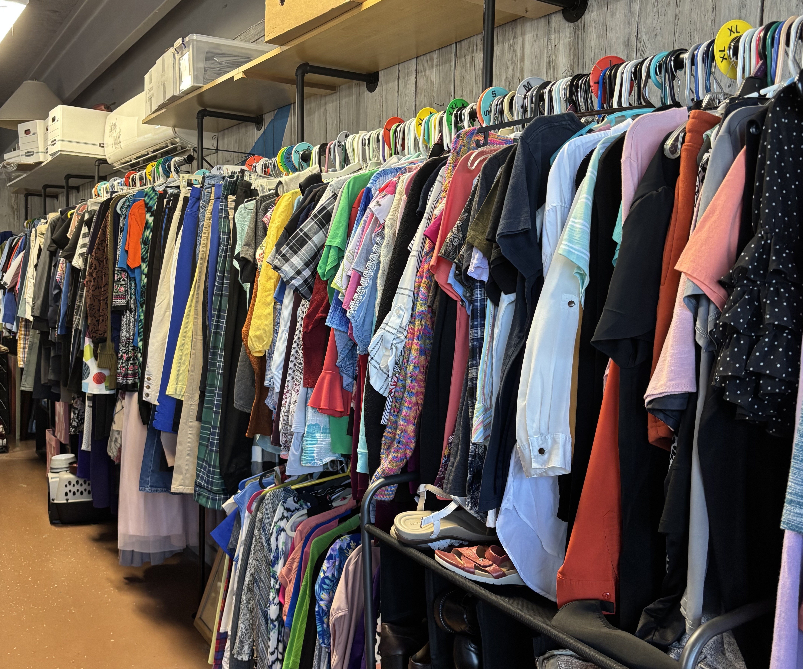
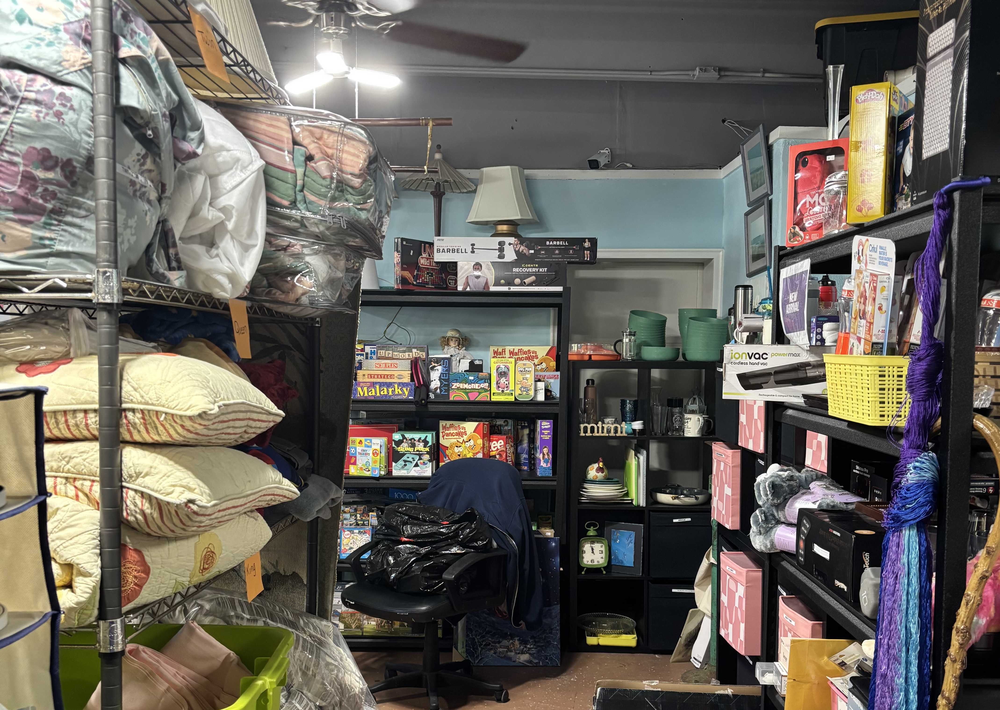

Visit Our Store
Browse quality items and support a great cause






Quality Items • Affordable Prices • Supporting Our Community
Shop with Purpose - Every Purchase Feeds Families
Love Thy Neighbor Thrift Store
7110 5th Avenue North
St. Petersburg, FL 33710
Same building as our Food Pantry - clearly marked entrances
Quality secondhand items:
• Clothing for all ages
• Household goods
• Small furniture
• Books & media
• Toys & games
• And much more!
Here's how your thrift store shopping helps our community
Profits fund our food pantry serving 2,000+ families each month with nutritious groceries.
Revenue helps provide professional cleaning for cancer patients, veterans, and families in crisis.
Items from clothing drives are distributed to homeless individuals during community outreach events.
Covers rent, utilities, equipment repairs (like freezers for the food pantry), and operational costs.
You can drop off donations at any of our three convenient locations during business hours:
7110 5th Avenue North
St. Petersburg, FL 33710
Best for: All donations
3880 5th Avenue
St. Petersburg, FL 33710
Donation box available
Browse quality items and support a great cause